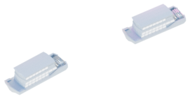

@@include("_item-map.html", {"nmb": 1, "direction": "Соло на закате", "title": "сквер Свердлова"})
@@include("_item-map.html", {"nmb": 2, "direction": "Соло на закате", "title": "Губернаторский сад"})
@@include("_item-map.html", {"nmb": 3, "direction": "Соло на закате", "title": "наб. Федоровского"})
@@include("_item-map.html", {"nmb": 4, "direction": "Соло на закате", "title": "Нижне-Волжская набережная"})
@@include("_item-map.html", {"nmb": 5, "direction": "Соло на закате", "title": "Стрелка"})
@@include("_item-map.html", {"nmb": 6, "direction": "«Ракушка»", "title": "Александровский сад, сцена «Ракушка»"})
@@include("_item-map.html", {"nmb": 7, "direction": "Соло на закате", "title": "Катер «Герой»"})
@@include("_item-map.html", {"nmb": 8, "direction": "Гастро рождественская", "title": "ул. Рождественская"})
